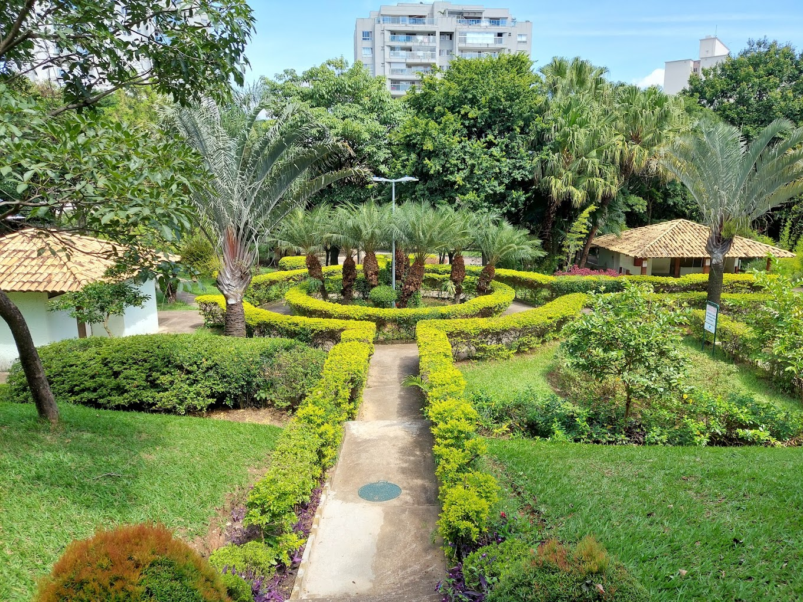

Bem-vindo ao parque Cassia Ellen
Implantado em 2000, por meio de medida de compensação ambiental, o Parque Municipal Cássia Eller possui uma área de aproximadamente 28 mil metros quadrados. Sua fauna é composta por aves, como bem-te-vis, tico-tico e rolinhas. Como opções de lazer, o parque oferece brinquedos, recantos para contemplação, mesas de jogos, equipamentos para ginástica e quadra esportiva.
Sobre o Parque Cassia Ellen
Com área de aproximadamente 28 mil m², o Parque Cássia Eller foi implantado no ano 2000, por meio de medida de compensação ambiental. Com fauna abundante em aves, o lugar oferece paisagem privilegiada e acesso fácil pela Av. Tancredo Neves, no bairro Paquetá.
O espaço atrai grupos de família e amigos em busca de um ambiente tranquilo e seguro para a realização de pequenas confraternizações, como pic-nic.Outras opções de lazer são os brinquedos, recantos para contemplação, mesas de jogos, equipamentos para ginástica e quadra esportiva.
Apesar de ter uma área menor do que os tradicionais parques municipais da cidade, o Parque Municipal Cássia Eller chama atenção por seu ótimo estado de conservação, limpeza e segurança, aspectos que atraem os moradores da região.
Contato
Horários de funcionamentos
Entre em contato conosco pelos seguintes canais: